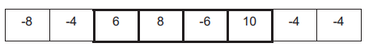

TD 21 Exercices BAC
| Thème : BAC | |
|---|---|
| 21 | TD : Exercices Divers BAC - Programmation |
Sujet 1 : Tableaux et Programmation⚓︎
On rappelle que len est une fonction qui prend un tableau en paramètre et renvoie sa longueur.
C’est-à-dire le nombre d’éléments présents dans le tableau.
Exemple : len([12, 54, 34, 57]) vaut 4.
Le but de cet exercice est de programmer différentes réductions pour un site de vente de vêtements en ligne.
On rappelle que si le prix d’un article avant réduction est de x euros,
- son prix vaut 0, 5x si on lui applique une réduction de 50%,
- son prix vaut 0, 6x si on lui applique une réduction de 40%,
- son prix vaut 0, 7x si on lui applique une réduction de 30%,
- son prix vaut 0, 8x si on lui applique une réduction de 20%,
- son prix vaut 0, 9x si on lui applique une réduction de 10%.
Dans le système informatique du site de vente, l’ensemble des articles qu’un client veut acheter, appelé panier, est modélisé par un tableau de flottants.
Par exemple, si un client veut acheter un pantalon à 30,50 euros, un tee-shirt à 15 euros, une paire de chaussettes à 6 euros, une jupe à 20 euros, une paire de collants à 5 euros, une robe à 35 euros et un short à 10,50 euros, le système informatique aura le tableau suivant :
tab = [30.5, 15.0, 6.0, 20.0, 5.0, 35.0, 10.5]
Question 1. (a)
Écrire une fonction Python total_hors_reduction ayant pour argument le tableau des prix des articles du panier d’un client et renvoyant le total des prix de ces articles.
Question 1. (b)
Le site de vente propose la promotion suivante comme offre de bienvenue : 20% de réduction sur le premier article de la liste, 30% de réduction sur le deuxième article de la liste (s’il y a au moins deux articles) et aucune réduction sur le reste des articles (s’il y en a).
Recopier sur la copie et compléter la fonction Python offre_bienvenue prenant en paramètre le tableau tab des prix des articles du panier d’un client et renvoyant le total à payer lorsqu’on leur applique l’offre de bienvenue.
1 2 3 4 5 6 7 8 9 10 11 12 | |
Pour toute la suite de l’exercice, on pourra utiliser la fonction total_hors_reduction même si la question 1 n’a pas été traitée.
Question 2.
Lors de la période des soldes, le site de vente propose les réductions suivantes :
- si le panier contient 5 articles ou plus, une réduction globale de 50%,
- si le panier contient 4 articles, une réduction globale de 40%,
- si le panier contient 3 articles, une réduction globale de 30%,
- si le panier contient 2 articles, une réduction globale de 20%,
- si le panier contient 1 article, une réduction globale de 10%.
Proposer une fonction Python prix_solde ayant pour argument le tableau tab des prix des articles du panier d’un client et renvoyant le total des prix de ces articles lorsqu’on leur applique la réduction des soldes.
Question 3. (a)
Écrire une fonction minimum qui prend en paramètre un tableau tab de nombres et renvoie la valeur minimum présente dans le tableau.
Question 3. (b)
Pour ses bons clients, le site de vente propose une offre promotionnelle, à partir de 2 articles achetés, l’article le moins cher des articles commandés est offert.
Écrire une fonction Python offre_bon_client ayant pour paramètre le tableau des prix des articles du panier d’un client et renvoyant le total à payer lorsqu’on leur applique l’offre bon client.
Question 4.
Afin de diminuer le stock de ses articles dans ses entrepôts, l’entreprise imagine faire l’offre suivante à ses clients : en suivant l’ordre des articles dans le panier du client, elle considère les 3 premiers articles et offre le moins cher, puis les 3 suivants et offre le moins cher et ainsi de suite jusqu’à ce qu’il reste au plus 2 articles qui n’ont alors droit à aucune réduction.
Exemple : Si le panier du client contient un pantalon à 30,50 euros, un tee-shirt à 15 euros, une paire de chaussettes à 6 euros, une jupe à 20 euros, une paire de collants à 5 euros, une robe à 35 euros et un short à 10,50 euros, ce panier est représenté par le tableau suivant :
tab = [30.5, 15.0, 6.0, 20.0, 5.0, 35.0, 10.5]
Donc le total après promotion de déstockage est 111 euros.
On constate que le prix après promotion de déstockage dépend de l’ordre dans lequel se présentent les articles dans le panier.
Question 4.(a)
Proposer un panier contenant les mêmes articles que ceux de l’exemple mais ayant un prix après promotion de déstockage différent de 111 euros.
Question 4. (b)
Proposer un panier contenant les mêmes articles mais ayant le prix après promotion de déstockage le plus bas possible.
Question 4. (c)
Une fois ses articles choisis, quel algorithme le client peut-il utiliser pour modifier son panier afin de s’assurer qu’il obtiendra le prix après promotion de déstockage le plus bas possible ? On ne demande pas d’écrire cet algorithme.
Sujet 2 : Programmation en Général⚓︎
Cet exercice porte sur la programmation en général.
Étant donné un tableau non vide de nombres entiers relatifs, on appelle sous-séquence une suite non vide d'éléments voisins de ce tableau. On cherche dans cet exercice à déterminer la plus grande somme possible obtenue en additionnant les éléments d'une sous-séquence.
Par exemple, pour le tableau ci-dessous, la somme maximale vaut 18.
Elle est obtenue en additionnant les éléments de la sous-séquence encadrée en gras ci-dessous (6 ; 8 ; -6 ; 10).

Question 1. a.
Quelle est la solution du problème si les éléments du tableau sont tous positifs ?
Question 1. b.
Quelle est la solution du problème si tous les éléments sont négatifs ?
Dans cette question, on examine toutes les sous-séquences possibles.
Question 2. a.
Écrire le code Python d'une fonction somme_sous_sequence(lst, i, j) qui prend en argument une liste et deux entiers i, j et renvoie la somme de la sous-séquence délimitée par les indices i et j (inclus).
Question 2. b.
La fonction pgsp ci-dessous permet de déterminer la plus grande des sommes obtenues en additionnant les éléments de toutes les sous-séquences possibles du tableau lst.
def pgsp(lst):
n = len(lst)
somme_max = lst[0]
for i in range(n):
for j in range(i, n):
s = somme_sous_sequence(lst, i, j)
if s > somme_max :
somme_max = s
return somme_max
- 10
- 55
- 100
- 1055
Question 2. c.
Recopier et modifier la fonction pgsp pour qu'elle renvoie un tuple contenant la somme maximale et les indices qui délimitent la sous-séquence correspondant à cette somme maximale.
Question 3.
On considère dans cette question une approche plus élaborée. Son principe consiste, pour toutes les valeurs possibles de l’indice ݅, à déterminer la somme maximale ܵ(݅) des sous-séquences qui se terminent à l'indice ݅.
En désignant par lst[݅] l’élément de lst d’indice ݅, on peut vérifier que
- S(0) = lst[0]
- et pour ݅\(i \geq 1\) :
- \(Sܵ(i) = lst[݅i]\) si ܵ\((݅i- 1) ≤ 0\) ;
- \(i = lst[݅i] + ܵS(݅i-1)\) si ܵ\(S(݅i-1) > 0\).
Question 3. a.
Recopier et compléter le tableau ci-dessous avec les valeurs de ܵ\(S(݅i)\) pour la liste considérée en exemple.
Question 3. b.
La solution au problème étant la plus grande valeur des ܵ\(S(݅i)\), on demande de compléter la fonction pgsp2 ci-dessous, de sorte que la variable sommes_max contienne la liste des valeurs ܵ\(S(݅i)\).
def pgsp2(lst):
sommes_max = [lst[0]]
for i in range(1, len(lst)):
# à compléter
return max(sommes_max)
Question 3. c.
En quoi la solution obtenue par cette approche est-elle plus avantageuse que celle de la question 2.b. ?
Sujet 3 : Tableau - Parcours - Programmation en Général⚓︎
Cet exercice porte sur l’algorithmique et la programmation en Python. Il aborde les notions de tableaux de tableaux et d’algorithmes de parcours de tableaux.
Partie A : Représentation d’un labyrinthe
On modélise un labyrinthe par un tableau à deux dimensions à ݊\(n\) lignes et ݉\(m\) colonnes avec ݊\(n\) et ݉\(m\) des entiers strictement positifs.
Les lignes sont numérotées de 0 à ݊\(n-1\) et les colonnes de 0 à \(m-1\).
La case en haut à gauche est repérée par \((0,0)\) et la case en bas à droite par \((n-1,m-1)\).
Dans ce tableau :
- 0 représente une case vide, hors case de départ et arrivée,
- 1 représente un mur,
- 2 représente le départ du labyrinthe,
- 3 représente l'arrivée du labyrinthe.
Ainsi, en Python, le labyrinthe ci-dessous est représentée par le tableau de tableaux lab1.

Question A.1.
Le labyrinthe ci-dessous est censé être représenté par le tableau de tableaux lab2.
Cependant, dans ce tableau, un mur se trouve à la place du départ du labyrinthe.
Donner une instruction permettant de placer le départ au bon endroit dans lab2.

Question A.2.
Écrire une fonction est_valide(i, j, n, m) qui renvoie True si le couple \((i,j)\) correspond à des coordonnées valides pour un labyrinthe de taille \((n,m)\), et False sinon.
On donne ci-dessous des exemples d'appels.
>>> est_valide(5, 2, 10, 10)
True
>>> est_valide(-3, 4, 10, 10)
False
Question A.3.
On suppose que le départ d'un labyrinthe est toujours indiqué, mais on ne fait aucune supposition sur son emplacement. Compléter la fonction depart(lab)ci-dessous de sorte qu'elle renvoie, sous la forme d'un tuple, les coordonnées du départ d'un labyrinthe (représenté par le paramètre lab).
Par exemple, l'appel depart(lab1) doit renvoyer le tuple (5, 0).
def depart(lab) :
n = len(lab)
m = len(lab[0])
...
Question A.4.
Écrire une fonction nb_cases_vides(lab) qui renvoie le nombre de cases vides d'un labyrinthe (comprenant donc l'arrivée et le départ).
Par exemple, l'appel nb_cases_vides(lab2) doit renvoyer la valeur 19.
Partie B : Recherche d’une solution dans un labyrinthe
On suppose dans cette partie que les labyrinthes possèdent un unique chemin allant du départ à l’arrivée sans repasser par la même case. Dans la suite, c’est ce chemin que l’on appellera solution du labyrinthe.
Pour déterminer la solution d'un labyrinthe, on parcourt les cases vides de proche en proche.
Lors d’un tel parcours, afin d’éviter de tourner en rond, on choisit de marquer les cases visitées.
Pour cela, on remplace la valeur d'une case visitée dans le tableau représentant le labyrinthe par la valeur 4.
Question B.1.
On dit que deux cases d'un labyrinthe sont voisines si elles ont un côté commun.
On considère une fonction voisines(i, j, lab) qui prend en arguments deux entiers ݅\(i\) et ݆\(j\) représentant les coordonnées d’une case et un tableau lab qui représente un labyrinthe.
Cette fonction renvoie la liste des coordonnées des cases voisines de la case de coordonnées \((i,j)\) qui sont valides, non visitées et qui ne sont pas des murs. L'ordre des éléments de cette liste n'importe pas.
Ainsi, l'appel voisines(1, 1, [[1, 1, 1], [4, 0, 0], [1, 0, 1]]) renvoie la liste [(2, 1), (1, 2)].
Que renvoie l'appel voisines(1, 2, [[1, 1, 4], [0, 0, 0], [1, 1, 0]]) ?
Question 2.
On souhaite stocker la solution dans une liste chemin. Cette liste contiendra les coordonnées des cases de la solution, dans l'ordre. Pour cela, on procède de la façon suivante.
- Initialement :
- déterminer les coordonnées du départ : c'est la première case à visiter ;
- ajouter les coordonnées de la case départ à la liste chemin.
- Tant que l'arrivée n'a pas été atteinte :
- on marque la case visitée avec la valeur 4 ;
- si la case visitée possède une case voisine libre, la première case de la liste renvoyée par la fonction
voisinesdevient la prochaine case à visiter et on ajoute à la liste chemin ; - sinon, il s'agit d'une impasse. On supprime alors la dernière case dans la liste chemin. La prochaine case à visiter est celle qui est désormais en dernière position de la liste chemin.
Question B.2. a.
Le tableau de tableaux lab3 ci-dessous représente un labyrinthe.
lab3 = [[1, 1, 1, 1, 1, 1],
[2, 0, 0, 0, 0, 3],
[1, 0, 1, 0, 1, 1],
[1, 1, 1, 0, 0, 1]]
La suite d'instructions ci-dessous simule le début des modifications subies par la liste chemin lorsque l'on applique la méthode présentée.
# entrée: (1, 0), sortie (1, 5)
chemin = [(1, 0)]
chemin.append((1, 1))
chemin.append((2, 1))
chemin.pop()
chemin.append((1, 2))
chemin.append((1, 3))
chemin.append((2, 3))
Compléter cette suite d'instructions jusqu'à ce que la liste chemin représente la solution.
Rappel : la méthode pop supprime le dernier élément d'une liste et renvoie cet élément.
Question B.2. b.
Recopier et compléter la fonction solution(lab) donnée ci-dessous de sorte qu'elle renvoie le chemin solution du labyrinthe représenté par le paramètre lab.
On pourra pour cela utiliser la fonction voisines.
def solution(lab):
chemin = [depart(lab)]
case = chemin[0]
i = case[0]
j = case[1]
---
Par exemple, l 'appel solution(lab2) doit renvoyer [(1, 0), (1, 1), (1, 2), (1, 3), (1, 4), (1, 5), (2, 5), (3, 5), (4, 5), (5, 5), (6, 5)].